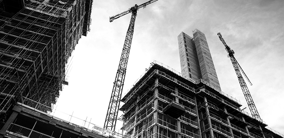
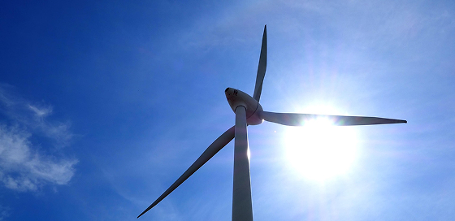

HOME > 회사소개 > 기술혁신
기술혁신 R&D INNOVATION
R&D INNOVATION
01 R&D OVERVIEW 연구개발 개요
금호건설 기술연구소는 구조물의 안전성과 시공 효율, 환경기술을 연구합니다. 특화기술을 고도화하고 우수기술을 현장에 맞게 발전시켜, 연구성과가 실질적인 고객가치로 이어지도록 연결합니다.
R&D APPROACH
- 01
- 특화기술
고도화 - 02
- 선진기술
현장화 - 03
- 연구성과
실용화
02 RESEARCH DOMAINS 핵심 연구영역
-

-

03 TECHNOLOGY CERTIFICATIONS 기술인증 현황
현장에서 검증된 연구성과를 신기술과 인증으로 축적해 왔습니다.
| 구분 기술명 |
등록·인증번호 | 취득일 |
|---|---|---|
| 건설기술 경량 패널을 이용한 네일형 절토부 옹벽 공법 | 제922호 | |
| 건설기술 비정형 프리캐스트 합성보 기술 | 제860호 | |
| 환경기술 막여과 역세척수의 망간 제거를 통한 막오염 저감기술 | 인증 제535호 / 검증 제215호 | |
| 특허기술 덮개부재와 수평관통 보강부재를 이용한 관로 설치용 받침대 시공방법 | 10-1859538 | |
| 건설기술 변단면 슬립폼 급속시공 기술 | 제776호 | |
| 환경기술 유기성 폐기물 바이오가스화 기술(KH-ABC) | GT-14-00231 | |
| 특허기술 처리수 배출장치 및 방법 | 10-1800278 | |
| 특허기술 생물세척장치 및 이를 이용한 토양복원장치 | 10-1779903 | |
| 특허기술 사철 기반의 망간사 제조방법 | 10-1734968 | |
| 건설기술 BIM 기반 디지털 가상시공 기술 | 제776호 연계 | |
| 건설기술 GFRP 모듈형 거푸집 패널 기술 | 제776호 연계 | |
| 건설기술 GPS 기반 고주탑 시공 정밀도 및 형상관리 기술 | 제776호 연계 | |
| 건설기술 표면파 측정 기반 콘크리트 초기 양생강도 평가기술 | 제776호 연계 | |
| 건설기술 무선 전동식 스핀들을 이용한 슬립폼 시공기술 | 제776호 연계 | |
| 특허기술 순환유량 자동조절이 가능한 미세기포 발생장치 | 10-1777655 | |
| 특허기술 바이오가스 탈황장치 | 10-1721542 | |
| 특허기술 흡착제 재생이 가능한 수처리장치 및 수처리 방법 | 10-1642081 | |
| 특허기술 바이오가스 메탄농도 제어가 가능한 수평형 혐기성 소화조 | 10-1647115 | |
| 환경기술 수평형 혐기소화조를 이용한 유기성 폐기물 바이오가스화 기술 | 인증 제441호 / 검증 제185호 | |
| 특허기술 조립구조를 갖는 저심도 박스형 지하구조물 및 시공방법 | 10-1710045 | |
| 특허기술 지열 냉난방 시스템용 지중열교환장치 | 10-1598562 | |
| 환경기술 유동전류 제어형 막여과 정수처리 기술 | 인증 제320호 / 검증 제138호 | |
| 환경기술 하수 고도처리 및 호기성 막 분리 슬러지 감량 기술 | 인증 제293호 / 검증 제125호 | |
| 환경기술 완전혼합·관형흐름 형태의 SBR 하수 고도처리 기술 | 인증 제227호 / 검증 제113호 | |
| 환경기술 침지형 평막을 이용한 하수 고도처리 기술(K-MBR) | 제110호 | |
| 건설기술 폐타이어 및 폐유리 미분말 활용 탄성 도막 방수공법 | 제349호 | |
| 환경기술 단일반응조 간헐방류식 하수 고도처리 기술(KIDEA) | 인증 제7호 / 검증 제8호 | |
| 건설기술 마찰형 포트받침을 이용한 교량 면진 시스템 | 제229호 | |
| 건설기술 분절형 PC아치교 급속시공 기술 | 자체개발 | — |
| 건설기술 자기치유형 구체방수 콘크리트 기술 | 자체개발 | — |
※ 기존 홈페이지에 공개된 주요 인증 내역을 기준으로 구성한 포트폴리오 시안입니다.